ppdire¶
Beyond discussion, the class of dimension reduction with the longest standing history accessible through direpack, is projection pursuit (PP) dimension reduction.
Let  be a data matrix that is a sample of
be a data matrix that is a sample of  cases of a
cases of a  variate random variable and 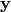 be a sample of a corresponding depending variable, when applicable.
The set of projection pursuit scores
variate random variable and 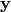 be a sample of a corresponding depending variable, when applicable.
The set of projection pursuit scores  that span the columns of 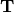 are defined as linear combinations of the original variables:
that span the columns of 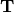 are defined as linear combinations of the original variables:  , where the
, where the  are
the solution to the optimisation problem:
are
the solution to the optimisation problem:
(1)¶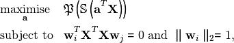
where 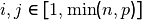, 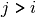 and the set 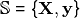 if data for a dependent variable  exist and is a singleton containing otherwise.
Maximization of this criterion is very flexible and the properties of the dimension reduction accomplished according to it can vary widely, mainly dependent on the presence or absence of dependent
variable data, as well as on
exist and is a singleton containing otherwise.
Maximization of this criterion is very flexible and the properties of the dimension reduction accomplished according to it can vary widely, mainly dependent on the presence or absence of dependent
variable data, as well as on  , which in the PP literature is referred to as the projection index.
, which in the PP literature is referred to as the projection index.
dicomo¶
The projection index determines which method is being calculated. In direpack, projection pursuit can be called through the ppdire subpackge and class object, which allows the user to pass any function of appropriate dimensionality as a projection index. However, a set of popular projection indices deriving from (co-)moments, are provided as well through the dicomo subpackage. For several of these, plugging them in leads to well-established methods. They comprise:
Moment statistics: variance (PCA), higher order moments
Co-moment statistics: covariance (PLS), higher order co-moments
Standardized moments: skewness (ICA), kurtosis (ICA)
Standardized co-moments: correlation coefficient (CCA), co-skewness, co-kurtosis
Linear combinations of (standardized co-) moments. Here, the texttt{capi.py} file in the ppdire subpackage delivers to co-moment analysis projection index (Serneels2019).
Products of (co-)moments. Particularly the continuum association measure has been provided, which is given by 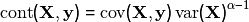. Using this continuum measure produces continuum regression (CR, Stone and Brooks (1990)). CR is equivalent to PLS for 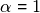 and approaches PCA as 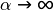.
pp optimizers¶
Early ideas behind PP was the ability to scan all directions maximizing the projection index as denoted in (1). This essentially corresponds to a brute force optimization technique, which can be computationally very demanding. For instance, for both PCA and PLS, can be solved analytically, leading to effi-cient algorithms that do not directly optimize (1). Whenever the projection index plugged in, leadsto a convex optimization problem, it is advisable to apply an efficient numerical optimizationtechnique. For that purpose,ppdirehas the option to usescipy.optimize’s sequential leastsquares quadratic programming optimization (SLSQP). However, for projection indices basedon ordering or ranking data, such as medians or trimmed (co-)moments, the problem is nolonger convex and cannot be solved through SLSQP. For those purposes, thegridalgorithm isincluded, which was originally developed to compute RCR (Filzmoser, Serneels, Croux, andVan Espen 2006).
Regularized regression¶
While the main focus of direpack is dimension reduction, all dimension reduction techniques offer a bridge to regularized regression.
This can be achieved by regressing the dependent variable onto the estimated dimension reduced space. The latter provides regularization of the covariance matrix,
due to the constraints in (1), and allow to perform regression for an undersampled . The classical estimate is to predict through least squares regression:
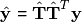
which again leads to well-established methods such as principal component regression (PCR), PLS regression, etc.
Usage¶
Created on Sun Dec 30 12:02:12 2018
ppdire - Projection pursuit dimension reduction
@author: Sven Serneels (Ponalytics)
-
class
direpack.ppdire.ppdire.ppdire(projection_index, pi_arguments={}, n_components=1, trimming=0, alpha=1, optimizer='SLSQP', optimizer_options={'maxiter': 100000}, optimizer_constraints={}, regopt='OLS', center='mean', center_data=True, scale_data=True, whiten_data=False, square_pi=False, compression=False, copy=True, verbose=True, return_scaling_object=True)[source]¶ PPDIRE Projection Pursuit Dimension Reduction
The class allows for calculation of the projection pursuit optimization either through scipy.optimize or through the grid algorithm, native to this package. The class provides a very flexible way to access optimization of projection indices that can lead to either classical or robust dimension reduction. Optimization through scipy.optimize is much more efficient, yet it will only provide correct results for classical projection indices. The native grid algorithm should be used when the projection index involves order statistics of any kind, such as ranks, trimming, winsorizing, or empirical quantiles.
- Input parameters to class:
- projection_index: function or class. dicomo and capi supplied in this
package can both be used, but user defined projection indices can be processed
pi_arguments: dict of arguments to be passed on to projection index n_components: int trimming: float, trimming percentage to be entered as pct/100 alpha: float. Continuum coefficient. Only relevant if ppdire is used to
estimate (classical or robust) continuum regression
- optimizer: str. Presently: either ‘grid’ (native optimizer) or
any of the options in scipy-optimize (e.g. ‘SLSQP’)
- optimizer_options: dict with options to pass on to the optimizer.
If optimizer == ‘grid’, ndir: int: Number of directions to calculate per iteration. maxiter: int. Maximal number of iterations.
- optimizer_constraints: dict or list of dicts, further constraints to be
passed on to the optimizer function.
- regopt: str. regression option for regression step y~T. Can be set
to ‘OLS’ (default), ‘robust’ (will run sprm.rm) or ‘quantile’ (statsmodels.regression.quantreg).
- center: str, how to center the data. options accepted are options from
sprm.preprocessing
center_data: bool scale_data: bool. Note: if set to False, convergence to correct optimum
is not a given. Will throw a warning.
whiten_data: bool. Typically used for ICA (kurtosis as PI) square_pi: bool. Whether to square the projection index upon evaluation. compression: bool. Use internal data compresion step for flat data. copy: bool. Whether to make a deep copy of the input data or not. verbose: bool. Set to True prints the iteration number. return_scaling_object: bool.
The grid optimization algorithm for projection pursuit implemented here, was outlined in:
Filzmoser, P., Serneels, S., Croux, C. and Van Espen, P.J., Robust multivariate methods: The projection pursuit approach, in: From Data and Information Analysis to Knowledge Engineering, Spiliopoulou, M., Kruse, R., Borgelt, C., Nuernberger, A. and Gaul, W., eds., Springer Verlag, Berlin, Germany, 2006, pages 270–277.
The ‘fit’ function will take a set of optional input arguments.
-
fit(X, *args, **kwargs)[source]¶ Fit a projection pursuit dimension reduction model.
Required input argument: X data as matrix or data frame
Optinal input arguments:
arg or kwarg: y data as vector or 1D matrix
kwargs: h, int: option to overrule class’s n_components parameter in fit.
Convenient command line, yet should not be used in automated loops, e.g. cross-validation.
dmetric, str: distance metric used internally. Defaults to ‘euclidean’
mixing, bool: to estimate mixing matrix (only relevant for ICA)
Further parameters to the regression methods can be passed on here as well as kwargs, e.g. quantile=0.8 for quantile regression.
kwargs only relevant if y specified:
-
get_params(deep=False)[source]¶ Get parameters for this estimator. :param deep: If True, will return the parameters for this estimator and
contained subobjects that are estimators.
- Returns
params (mapping of string to any) – Parameter names mapped to their values.
——
Copied from ScikitLlearn instead of imported to avoid ‘deep=True’
Created on Sun Dec 2 13:14:51 2018
@author: sven
-
class
direpack.dicomo.dicomo.dicomo(est='arithmetic', mode='mom', center='mean')[source]¶ The dicomo class implements (co)-moment statistics, covering both clasical product-moment statistics, as well as more recently developed energy statistics. The dicomo class also serves as a plug-in into capi and ppdire. It has been written consistently with ppdire such that it provides a wide range of projection indices based on (co-)moments. Ancillary functions for (co-)moment estimation are in _dicomo_utils.py.
- Parameters
str (mode,) – mode of estimation. The set of options are ‘arithmetic’ (product-moment) or ‘distance’ (energy statistics)
str – type of moment. Options are: * ‘mom’: moment * ‘var’: variance * ‘std’: standard deviation * ‘skew’: skewness * ‘kurt’: kurtosis * ‘com’: co-moment * ‘M3’: shortcut for third order co-moment * ‘cov’: covariance * ‘cos’: co-skewness * ‘cok’: co-kurtosis * ‘corr’: correlation, * ‘continuum’: continuum association * ‘mdd’: martingale difference divergence (requires est = ‘distance’) * ‘mdc’: martingale difference correlation (requires est = ‘distance’) * ‘ballcov’: ball covariance (requires installing Ball and uncommenting the import statement)
center – internal centring used in calculation. Options are mean or median.
-
Always provided
-
`moment_` The resulting (co-)moment
-
Depending on the options picked, intermediate results are stored as well,
-
such as `x_moment_`, `y_moment_` or `co_moment_`
- Methods
fit(X, *args, **kwargs): fit model
Remarks: The fit function takes several optional input arguments. These are options that apply to individual settings:
- biascorr, Bool, when True, correct for bias. For classical product-moment statistics, this
is the small sample correction. For energy statistics, this leads to the estimates that are unbiased in high dimension (but not preferred in low dimension).
alpha, float, parameter for continuum association. Has no effect for other options. option, int, determines which higher order co-moment to calculate,
e.g. for co-skewness, option=1 calciulates CoS(x,x,y)
- order, int, which order (co-)moment to calculate. Can be overruled by mode,
e.g. if mode=’var’, order is set to 2.
calcmode, str, to use the efficient or naive algorithm to calculate distance statistics. Defaults to fast when available.
Dependencies¶
From sklearn.base: BaseEstimator,`TransformerMixin`,`RegressorMixin`
From sklearn.utils: _BaseComposition
copy
scipy.stats
From scipy.linalg: pinv2
From scipy.optimize: minimize
numpy
From statsmodels.regression.quantile_regression: QuantReg
From sklearn.utils.extmath: svd_flip
References¶
- Robust Multivariate Methods: The Projection Pursuit Approach, Peter Filzmoser, Sven Serneels, Christophe Croux and Pierre J. Van Espen, in: From Data and Information Analysis to Knowledge Engineering,
Spiliopoulou, M., Kruse, R., Borgelt, C., Nuernberger, A. and Gaul, W., eds., Springer Verlag, Berlin, Germany, 2006, pages 270–277.
- Projection pursuit based generalized betas accounting for higher order co-moment effects in financial market analysis, Sven Serneels, in:
JSM Proceedings, Business and Economic Statistics Section. Alexandria, VA: American Statistical Association, 2019, 3009-3035.
Robust principal components and dispersion matrices via projection pursuit, Chen, Z. and Li, G., Research Report, Department of Statistics, Harvard University, 1981.
Robust Continuum Regression, Sven Serneels, Peter Filzmoser, Christophe Croux, Pierre J. Van Espen, Chemometrics and Intelligent Laboratory Systems, 76 (2005), 197-204.